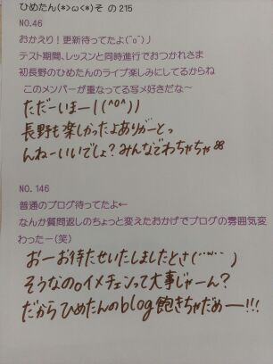

| 2012/11 03 Sat | ひめたん(*>ω<*)そ の227 |
質問！
蛇のしっぽはどこからー？
我が家で家族会議になった議題。
まま:
どこからしっぽなんだろう
ひめか:
へびにしっぽなんてないわよ
すずか:
へびって手があるよね
ん。まーいーや
とにかーくっ
ままがへびのしっぽと胴体の境目が知りたいらしいので、
よかったら教えてくださーい(*>ω<*)
今日はマリーアントワネットさんのDVD見たの＊
んーお美しいね。
ひめたんはフランス語ってゆったら
Merci.しかわかんないや。めるしー
プリンシパルの時の制服ですねー
なんでムッとしてるのひめたん
笑ってひめたーんー(´・ω・｀)
そして前髪どーにかしてー

 広島弁と伊予弁はよう似とんじゃけど、愛媛についてはどんな印象をもっとるん？
広島弁と伊予弁はよう似とんじゃけど、愛媛についてはどんな印象をもっとるん？
ほんまじゃーあっ
愛媛近いよ愛媛！
まだ四国に上陸したことないんだけどね
愛媛行きたいよーみかん食べたいよー
ひめたんが幼稚園からずっと仲良しだったなおりんは四国に引っ越したよ＼^^／
伊予弁聞きたいー！
一年前の今日(10/23)はなんの日だったでしょう？＼(^o^)／勿論覚えてるよね← 裏話があったらおしえてー
お見立て会ね！
えー検索してやっと思い出しま←
ひめたんはぴんくのお猿さんとお話できるんですねーほんとに(*^^*)
あのときはまだブログやってなかったんだね。なーんか不思議。
あ、えっと裏話。
あのピンクのおさるさんは、渋谷のLOFTのお風呂コーナーで買った。
自己紹介はソニービルでみんなに見てもらって練習した。
握手の練習もしたなー懐かしいな(*´ω｀*)
今中２なんですが、理数苦手です。どうすればいいと思いますか？
あちゃまー
苦手科目を回避するようなことしたらひめたんみたいになるからね←
んーそうだなあ
100点取る必要はないと思うの(^^)
とりあ 基礎+а 理解で75点を目指そー！
応用問題なんて捨てるの。気が楽よ◎
最近ほっこりした話はありますか？
学校の帰り道にて。
 もし街で、広島ナンバーの車見かけたらどう思う〜(・∀・)
もし街で、広島ナンバーの車見かけたらどう思う〜(・∀・)
広島帰りたいなー
屋根に上って捕まっとく(・∀・)/
暑い夏で汗だく、入りたいのはプールとシャワーどっちですか。
プール断然プール。
トランプゲームで好きなのは何？
ダウト(ω)にやり
嘘ついてもばれちゃうけどね←
あと神経衰弱！
どうしてアイドルになろうと思ったの？
歌うこと、踊ること、そして人前に立つこととか人と話すこと好きだったから、アイドルって素敵だなーって思った。
芸能界ってもいろんなジャンルがあるけど、やっぱしひめたんにはアイドルが心地いいかなー♪楽しす楽しす
昔から『エクボある子は神様に可愛がれて幸せになれる』 って言い伝えられてるんだ この、ことわざ知ってますか？
へー初めて聞いた。なんか素敵だね＊
えくぼは恋の落とし穴ですよみなさーん(´。・ω・。｀)
ひめたんの左のえくぼ本当に可愛いくて, 好きなんだけど,いつ頃 (何歳)ぐらいから出来たのか？
わーありがとうありがとう(о´∀`о)
いつだろうねー
ちっちゃいときの写真見たらえくぼちゃーんとあったよ＊
あーなんかね
いっぱい質問してくださっててめちゃ嬉しいんだけど、
この前の記事で受け付けた質問をとりあえず返してるから反応できなくてごめんね←
また募集するから待っててー＼(^^)／

(＊´・ω・＊)ひめたん
コメント(147)
2012/11/03 23:00